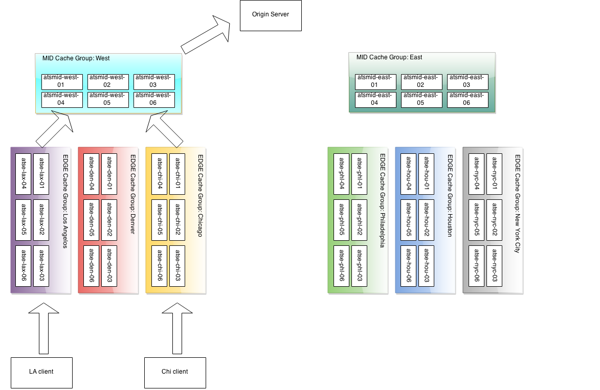

Running a Traffic Control CDN¶
Cache Group¶
A cache group is a logical group of caches that Traffic Router tries to use as a combined cache. Traffic Router treats all servers in a cache group as though they are in the same physical location, though they are in fact only in the same region (network). A cache group has one single set of geographical coordinates even if the caches that make up the cache group are in different physical locations. The caches in a cache group are not aware of the other caches in the group - there is no clustering software or communications between caches in a cache group.
There are two types of cache groups: EDGE and MID. Traffic Control is a two tier system, where the clients get directed to the EDGE cache group. On cache miss, the cache in the EDGE cache group obtains content from a MID cache group, rather than the origin, which is shared with multiple EDGEs. EDGE cache groups are configured to have one single parent cache group.
Note
Often the EDGE to MID relationship is based on network distance, and does not necessarily match the geographic distance.
A cache group serves a particular part of the network as defined in the coverage zone file. See The Coverage Zone File and ASN Table.
Consider the example CDN below:
There are two MID tier cache groups, each assigned with three EDGEs. The lax, den and chi EDGE locations are configured with the West MID as their parent, and the nyc, phl, and hou EDGEs, are configured with the East MID as their parent. On a cache miss, the EDGEs use their assigned parent.
All caches (and other servers) are assigned a Profile in Traffic Ops.
Profile¶
A Profile is a set of configuration settings and parameters, applied to a server or deliveryservice. For a typical cache there are hundreds of configuration settings to apply. The Traffic Ops parameter view contains the defined settings, and bundled into groups using Profiles. Traffic Ops allows for duplication, comparison, import and export of Profiles.
Why is my CRConfig.json rejected?¶
Especially in version 1.1.0, there’s a number of manual steps that need to be done after the initial install. Make sure that after the initial install, you perform these steps in order:
Note
Even though Traffic Ops allows you to enter the servers with no IPv6 address information, the CRConfig will not be accepted by Traffic Router without IPv6 address information for at least Traffic Router and Traffic Monitor. Traffic Control assumes in a lot of places that all servers have at least an IPv4 and an IPv6 address. If you are not using IPv6, it is best to enter dummy addresses for all server types, and turn IPv6 off in all delivery services. (https://github.com/Comcast/traffic_control/issues/44).
- Add users
Not necessarily needed for getting your CRConfig accepted, but always a good idea.
- Add Divisions
You will need at least one.
- Add Regions
You will need at least one.
- Add Physical Locations
You will need at least one.
- Add Mid tier Cache Groups
You will need at least one.
- Add Edge tier Cache Groups
You will need at least one.
- Add Traffic Monitors
You will need to enter at least one Traffic Monitor - make sure to change the server status to ONLINE.
- Add Traffic Routers
You will need to enter at least one Traffic Router - make sure to change the server status to ONLINE.
- Add Edges
You will need at least one edge cache to make Traffic Router accept the CRConfig.
- Add Mid
Technically you don’t need a mid tier, but if you have one, best to enter the info before continuing.
- Change the
polling.urlparameters to reflect your CDNSet where to get the coverage zone map, and the geo IP database.
- Create at least one delivery service, and assign at least one edge cache in REPORTED state to it.
Even if it is a dummy DS, without a single DS, the CRConfig will not be accepted by Traffic Router.
- Snapshot CRConfig
Tools > Snapshot CRConfig diff, and write.
Now you are ready to install the sw on Traffic Monitor and then Traffic Router.